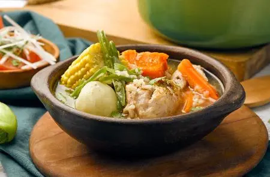

Cazuela

Description
La cazuela de pollo es uno de los platos más emblemáticos y reconfortantes de la gastronomía chilena.
Ingredients
- 2 Cdas de aceite
- 2 Zanahorias cortadas en bastones pequeños
- ½ Cebolla cortada en plumas
- 1 Diente de ajo cortado finamente
- 1 Trozo de apio
- 1 Pizca de orégano a gusto
- 1 Pizca de sal a gusto
- 5 Tutos de pollo sin su piel
- 2 Lts de agua caliente
- 1 Pizca de pimienta a gusto
- 1 Pizca de comino a gusto
- 5 Trozos de choclo medianos
- 5 Papas medianas peladas
- 5 Trozos medianos de zapallo camote
- 1 Tableta de caldo MAGGI® de gallina
- ¼ Taza de arroz
- 2 Tazas de porotos verdes
- 1 Puñado de perejil cortado finamente para decorar
Directions
- En una olla honda mediana agrega aceite, la cebolla, el ajo, la zanahoria y el apio y cocina suave por 5
minutos. Mientras calienta agua hasta que hierva.
- Agrega el pollo en la olla y vierte toda el agua caliente y cocina por 5 minutos desde el hervor (debe ser
suave). Condimenta con la tableta de caldo en polvo MAGGI® de gallina, orégano, comino y pimienta.
- Agrega el zapallo, las papas y el choclo, cocina tapado a fuego medio bajo durante 20 minutos aproximados
con el objetivo de avanzar la cocción de los ingredientes. Luego de 5 minutos de haber agregado el zapallo y
las papas, adiciona el arroz, cocina durante los 15 restantes minutos más hasta cocer todo los ingredientes.
Finalmente cuando falten solo 5 minutos puedes agregar los porotos verdes. Sirve caliente y acompaña con
ensaladas o como más te guste.
Home